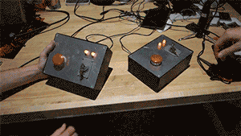

Nuclear Launcher
如何在 Linux 中为我们的 “核弹发射器” 编写一个设备驱动程序？

内核模块：一段可以被内核动态加载执行的代码
- Everything is a file
- 设备驱动就是实现了
struct file_operations的对象- 把文件操作翻译成设备控制协议
- 调用到设备实现的
file_operations
- 设备驱动就是实现了
更多的 File Operations
struct file_operations {
struct module *owner;
loff_t (*llseek) (struct file *, loff_t, int);
ssize_t (*read) (struct file *, char __user *, size_t, loff_t *);
ssize_t (*write) (struct file *, const char __user *, size_t, loff_t *);
int (*mmap) (struct file *, struct vm_area_struct *);
unsigned long mmap_supported_flags;
int (*open) (struct inode *, struct file *);
int (*release) (struct inode *, struct file *);
int (*flush) (struct file *, fl_owner_t id);
int (*fsync) (struct file *, loff_t, loff_t, int datasync);
int (*lock) (struct file *, int, struct file_lock *);
ssize_t (*sendpage) (struct file *, struct page *, int, size_t, loff_t *, int);
long (*unlocked_ioctl) (struct file *, unsigned int, unsigned long);
long (*compat_ioctl) (struct file *, unsigned int, unsigned long);
int (*flock) (struct file *, int, struct file_lock *);
...
为什么有两个 ioctl?
long (*unlocked_ioctl) (struct file *, unsigned int, unsigned long);
long (*compat_ioctl) (struct file *, unsigned int, unsigned long);
unlocked_ioctl: BKL (Big Kernel Lock) 时代的遗产- 单处理器时代只有
ioctl - 之后引入了 BKL,
ioctl执行时默认持有 BKL - (2.6.11) 高性能的驱动可以通过
unlocked_ioctl避免锁 - (2.6.36)
ioctl从struct file_operations中移除
- 单处理器时代只有
compact_ioctl: 机器字长的兼容性- 32-bit 程序在 64-bit 系统上可以 ioctl
- 此时应用程序和操作系统对 ioctl 数据结构的解读可能不同 (tty)
- (调用此兼容模式)
存储设备的抽象
磁盘 (存储设备) 的访问特性
- 以数据块 (block) 为单位访问
- 传输有 “最小单元”，不支持任意随机访问
- 最佳的传输模式与设备相关 (HDD v.s. SSD)
- 大吞吐量
- 使用 DMA 传送数据
应用程序不直接访问 - 访问者通常是文件系统 (维护磁盘上的数据结构)
- 大量并发的访问 (操作系统中的进程都要访问文件系统)
Linux Block I/O Layer
文件系统和磁盘设备之间的接口
- bread (读一块), bwrite (写一块), bflush (等待过往写入落盘)